designer
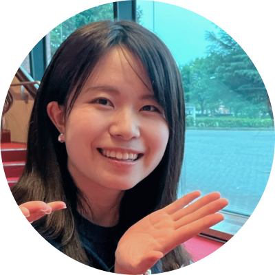
Shibata Yu
誕生日 9月1日 キウイの日🥝
出身地 長野県
あだ名 ゆーみん/ゆうゆう
私がデザイナーになるまで
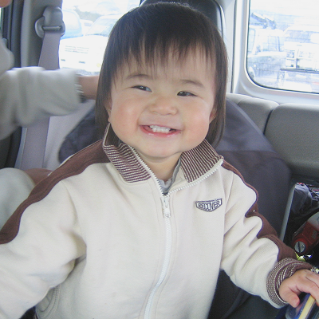
2003.09.01
小さすぎてしばらくは保育器に入っていました。「由宇」という名前は、「自由で宇宙のような広い心を持った人に」という願いをこめて付けてもらいました。ご覧の通り、顔がめちゃくちゃ四角かったです。
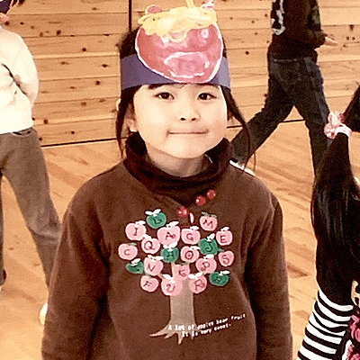
2009.02
父の仕事の関係で4回引越しをしました。長野県上田市-静岡県浜松市-長野県伊那市-長野県東御市を経て、長野県安曇野市に今の実家が建ちました！最後の保育園は年長さんの11月からお世話になりました。
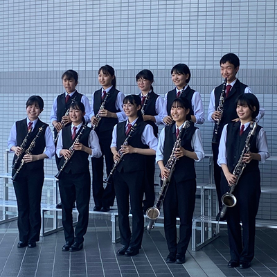
2019.03
部活動は陸上と吹奏楽で迷い、何か一芸を身に付けたかったので吹奏楽部に入りました。3年の時は副部長で「1年生は2学期まで黒や紺の靴下を履いてはいけない」という謎ルールを撤廃したという功績があります。
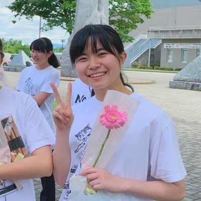
2021.06
高校でも吹奏楽を続けました！毎日7時半に学校に行って友達と朝練してから授業を受けるのが日課でした。年に一度の定期演奏会では自分たちでテーマを決め、それに合う選曲や演出を考えるのが楽しかったです！
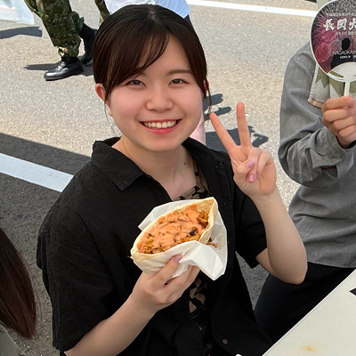
2022.09
将来どんな仕事をしたいかに向き合い、美術ほぼ未経験ながらデザインの道に進むことに決めました。受験で面接をしてくださった先生が、後に入る研究室の教授でした！！学祭の実行委員会に入っていました。
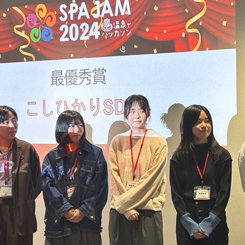
2023.11
2年生の後半にWebデザインやサービスデザインの授業を履修したことがきっかけで、UI/UXに興味を持ちました。アイデアソンやハッカソンにハマり、学外のイベントにもゼミの仲間と出場しました！
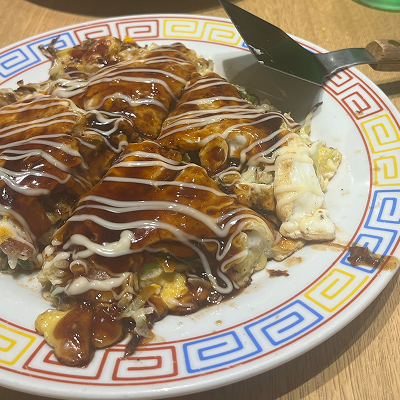
2024.08
3年生になり、夏のインターンを探していた際にウエディングパークに出会いました！2日間という短い間でしたがとても楽しくためになる時間でした。画像は同じチームだったまなちゃむと食べたお好み焼きです。
最近の私
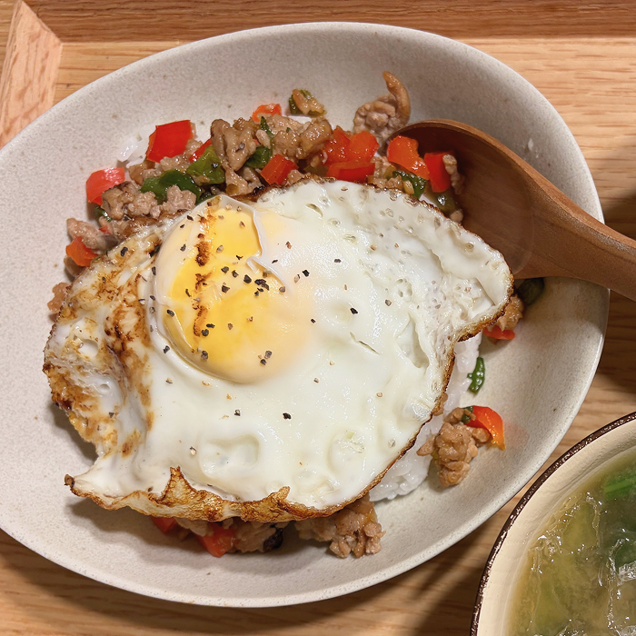
自分でも作ろう！と思い、初めてナンプラーを買ってガパオライスを作りました🇹🇭
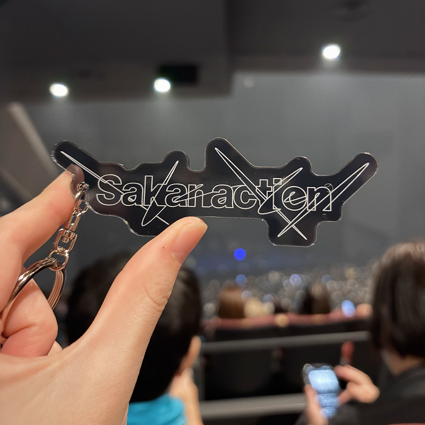
高3の時からサカナクションが好きで、ライブに欠かさず行っています！
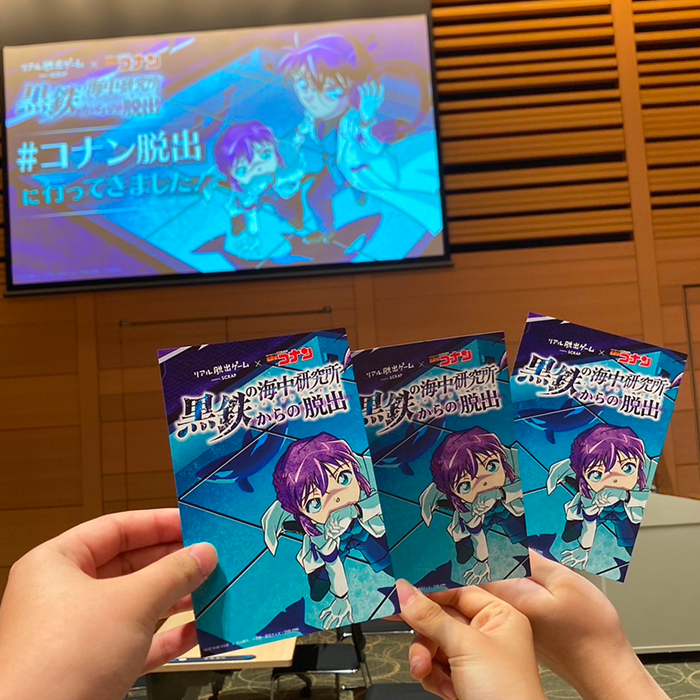
コナンとのコラボをきっかけにハマりました！街歩き型のやつが気になっています。
ギャラリー
1.大学で制作したものたちです。UI/UXがメインで、ブランディングや写真など幅広く学びました！
scroll
2.小さい頃から顔出し看板に目がありませんでした。私とお出かけした際は一緒に撮り合いましょう！
scroll